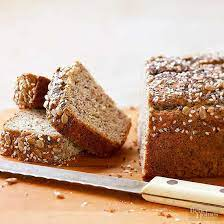
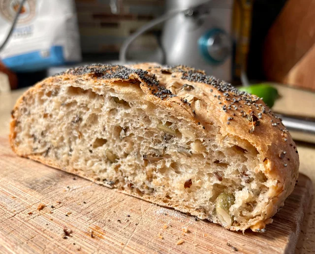
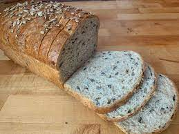
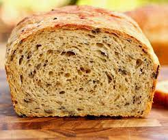

Wild Rice Bread with Sunflower Seeds
Experience the hearty, nutty flavor of our Wild Rice Bread with Sunflower Seeds, a unique blend that brings a wholesome twist to your bread basket.
Ingredients
Directions
Step 1:
In a small bowl, dissolve yeast in warm water. In a large bowl, combine rice, 1 cup sunflower kernels, milk, honey, butter, flaxseed, salt, yeast mixture, whole wheat flour and 1 cup all-purpose flour; beat on medium speed until combined. Stir in enough remaining flour to form a stiff dough (dough will be sticky).
Step 2:
Turn dough onto a floured surface; knead until elastic, 6-8 minutes. Place in a greased bowl, turning once to grease the top. Cover and let rise in a warm place until doubled, about 1-1/4 hours.
Step 3:
Punch down dough. Turn onto a lightly floured surface; divide in half. Roll each half into a 12x8-in. rectangle. Roll up jelly-roll style, starting with a short side; pinch seam and ends to seal. Place each in a 9x5-in. loaf pan coated with cooking spray, seam side down.
Step 4:
Cover with kitchen towels; let rise in a warm place until almost doubled, about 45 minutes. Preheat oven to 375°.
Step 5:
Brush loaves with egg white; sprinkle with remaining sunflower kernels and, if desired, wheat germ. Bake 35-45 minutes or until dark golden brown. Cool in pans 5 minutes. Remove to a wire rack to cool.
Step 1:
In a small bowl, dissolve yeast in warm water. In a large bowl, combine rice, 1 cup sunflower kernels, milk, honey, butter, flaxseed, salt, yeast mixture, whole wheat flour and 1 cup all-purpose flour; beat on medium speed until combined. Stir in enough remaining flour to form a stiff dough (dough will be sticky).
Step 2:
Turn dough onto a floured surface; knead until elastic, 6-8 minutes. Place in a greased bowl, turning once to grease the top. Cover and let rise in a warm place until doubled, about 1-1/4 hours.
Step 3:
Punch down dough. Turn onto a lightly floured surface; divide in half. Roll each half into a 12x8-in. rectangle. Roll up jelly-roll style, starting with a short side; pinch seam and ends to seal. Place each in a 9x5-in. loaf pan coated with cooking spray, seam side down.
Step 4:
Cover with kitchen towels; let rise in a warm place until almost doubled, about 45 minutes. Preheat oven to 375°.
Step 5:
Brush loaves with egg white; sprinkle with remaining sunflower kernels and, if desired, wheat germ. Bake 35-45 minutes or until dark golden brown. Cool in pans 5 minutes. Remove to a wire rack to cool.





Nutrition Information